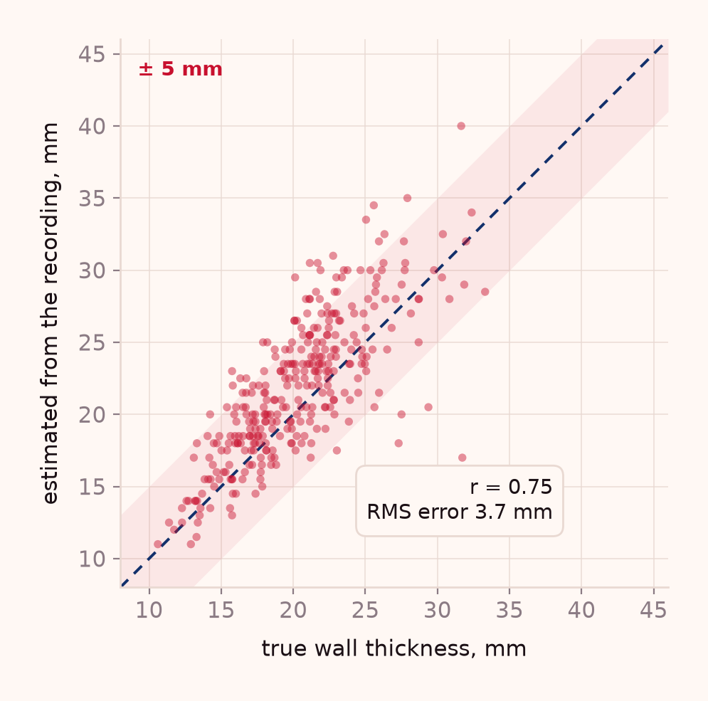
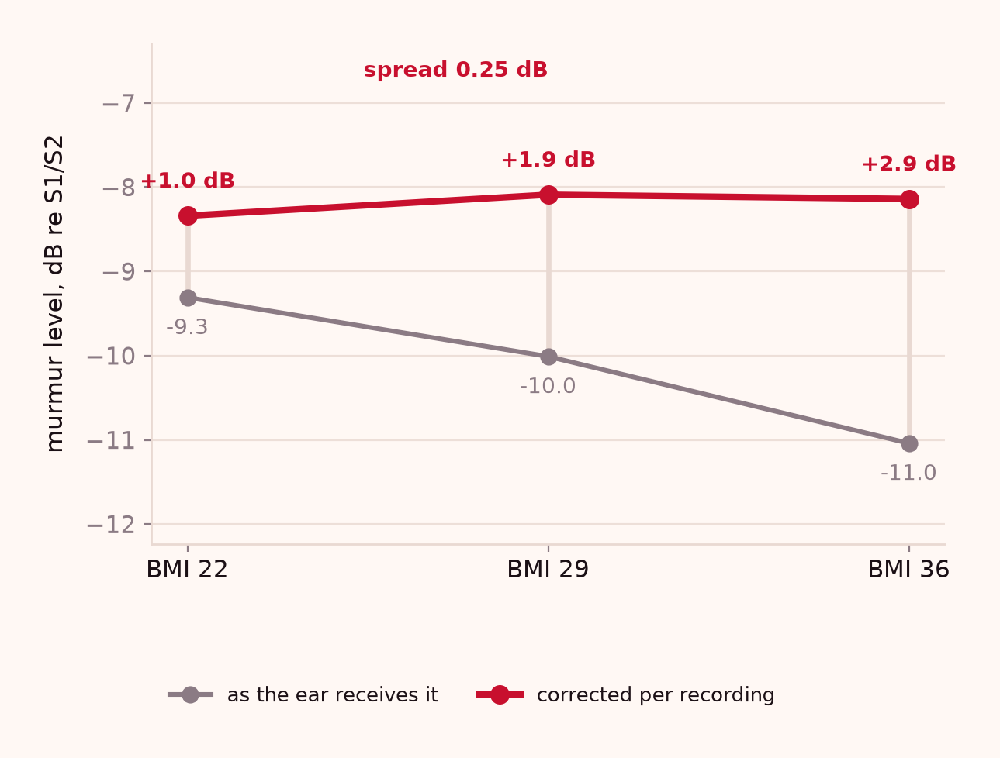
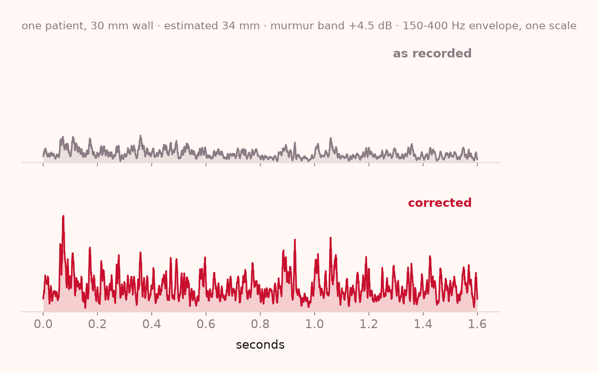
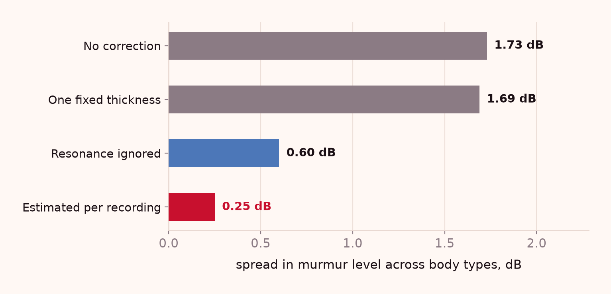
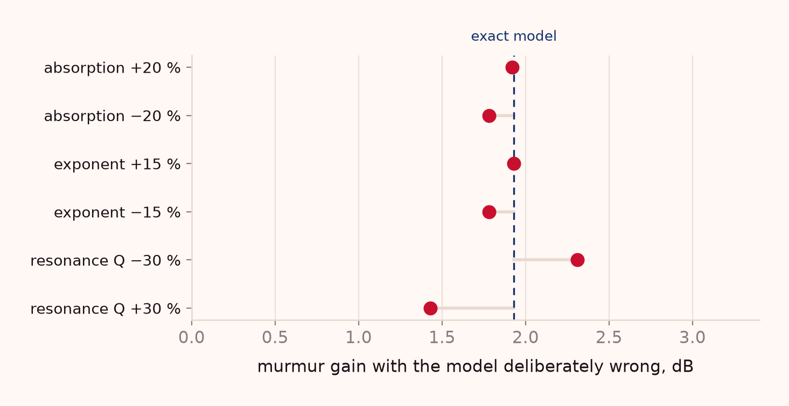

Evidence
What is measured.
What is modelled.
What is not yet known.
Three kinds of claim, kept apart on purpose. The model results below are computed by the code in this repository and regenerate on demand. None of them is a patient.
01 — Recovery
3.7 mm, without
being told.
600 synthetic subjects, walls from 9 to 45 mm, murmur present in half. The estimator sees one three-second recording and nothing else.

The fit allows an arbitrary gain, tilt and curvature for the unknown source spectrum — otherwise the estimator would be reading the heart, not the wall — and the residual shape then identifies the path.
The bias is +1.5 mm, meaning the method tends to over-estimate by about the width of a fingertip. That matters for the correction: over-estimating over-corrects, which is why the inverse is regularised rather than exact.
02 — Body dependence
The same murmur,
the same level.
Split by body habitus. Before correction the murmur falls away as the wall thickens; after correction the three levels sit within a quarter of a decibel.


The measure is a ratio against the patient's own valve closures, so it cannot be improved by pressing harder or turning up the volume. Body groups are thirds of a synthetic BMI distribution, mean 22.2, 29.0 and 36.1.
03 — Ablation
The obvious shortcut
does not work.
Four ways to build the same correction. Assuming one wall thickness for every patient — the cheap version — leaves the body dependence almost exactly where it was.

One fixed thickness gains 1.82 dB on average but leaves 1.69 dB of spread: it lifts everyone, so the difference between bodies survives.
Ignoring the resonance — modelling absorption only — does better than a fixed thickness but still leaves 0.60 dB, because the resonance is where the thickness information lives.
Estimating per recording is the only variant that reduces the spread to 0.25 dB, at a mean gain of 1.93 dB.
04 — Robustness
What happens when
the physics is wrong.
The generator and the estimator were made to disagree about absorption and about the resonance. The correction survives all six, which is the useful property of a physical model: it degrades, it does not collapse.

| Deliberate error | Thickness RMS | Gain |
|---|---|---|
| Absorption +20% | 3.20 mm | 1.92 dB |
| Absorption −20 % | 4.09 mm | 2.17 dB |
| Exponent +15 % | 4.61 mm | 2.30 dB |
| Exponent −15 % | 4.09 mm | 2.17 dB |
| Resonance Q −30 % | 6.58 mm | 2.80 dB |
| Resonance Q +30 % | 3.39 mm | 1.75 dB |
150 subjects per row, generator and estimator disagreeing by the stated amount.
Claims ledger
Every claim, and
what stands behind it.
If a claim is not in this table it is not made anywhere on the site. Where the evidence is missing, the row says so.
Milestones
Done, under way,
and next.
A prototype is a list of what exists and a list of what does not. Both are short here, and both are honest.
Completed
The device exists
- Three printed housing revisions, 38.9 mm seat
- Fitted to 44–48 mm single and double heads
- Dual-microphone chain capturing at 24-bit
- Firmware streaming over Bluetooth 5 with a ring buffer
- App that records, segments, corrects and gates
- More than 100 people have handled the unit
Under way
The measurements
- Bench measurement of two-microphone cancellation
- Contact-pressure protocol and repeatability across operators
- Recording sessions across body types
- Photograph of the insert seated in a real chestpiece
Next
The clinical claim
- Paired recording and echo study at a partner site
- Regulatory pathway: 510(k), exempt, or software-only
- Injection-mould tooling and a contract manufacturer
- Pilot units at $59 with the app included
Method
Check the arithmetic.
The model, the estimator and the figures are one Python file and one plotting file. Run them and every number on this page regenerates.
| Model and experiment | research/thoracic_model.py |
| Figures | research/make_figures.py |
| Output | research/results.json |
| Seed | 20261106 · reproducible |
The experiment generates a heart sound with noise, passes it through a modelled chest wall of known thickness, adds a room, and then hides the thickness from the estimator. Every reported number is computed from that pipeline, not written down by hand.